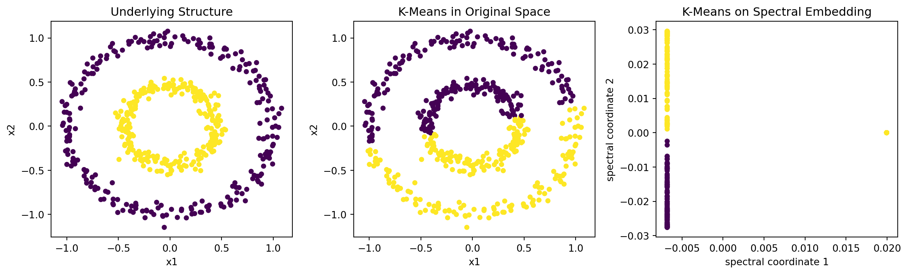
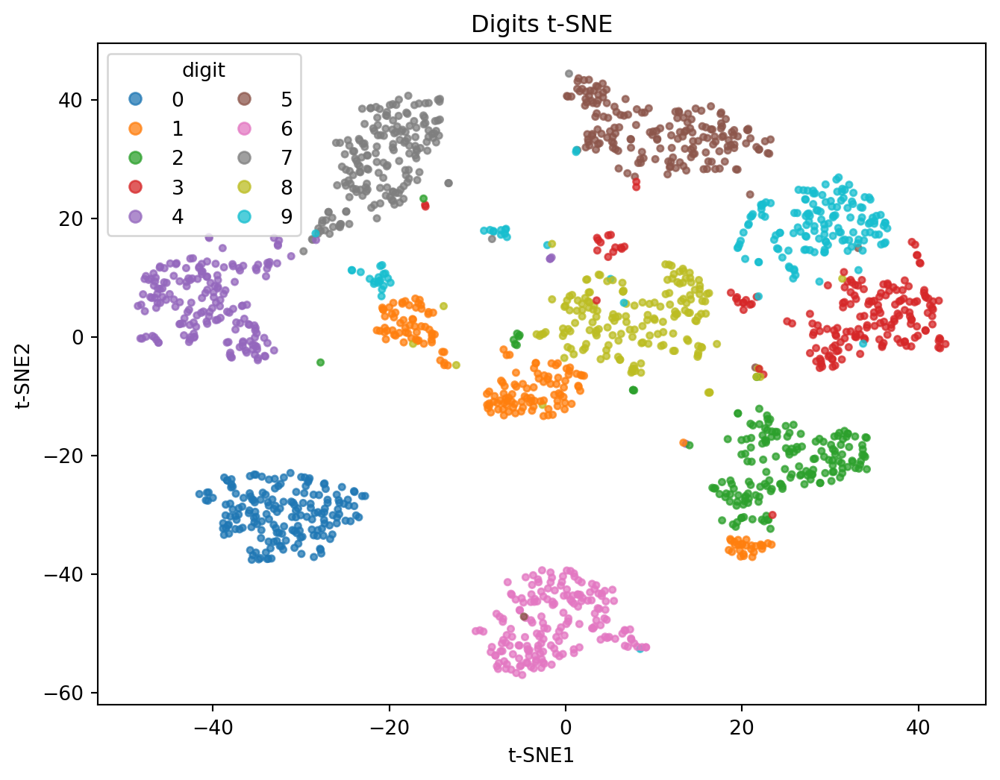

import matplotlib.pyplot as plt
from sklearn.cluster import KMeans
from sklearn.datasets import make_circles, load_digits
from sklearn.decomposition import PCA
from sklearn.manifold import SpectralEmbedding, TSNE
from sklearn.preprocessing import StandardScaler
X_circle, y_circle = make_circles(
n_samples=500,
factor=0.45,
noise=0.05,
random_state=1,
)
circle_kmeans = KMeans(
n_clusters=2,
n_init=20,
random_state=1,
).fit_predict(X_circle)
spectral = SpectralEmbedding(
n_components=2,
affinity="nearest_neighbors",
n_neighbors=10,
random_state=1,
)
Z_spectral = spectral.fit_transform(X_circle)
circle_spectral_kmeans = KMeans(
n_clusters=2,
n_init=20,
random_state=1,
).fit_predict(Z_spectral)14 Embedding and Visualization
The previous chapter treated PCA as a low-rank representation of a data matrix. PCA constructs new coordinates by multiplying the data matrix by loading vectors:
\[ Z=XV_m. \]
An embedding is the broader idea of assigning each high-dimensional observation a lower-dimensional coordinate:
\[ x_i\in\mathbb R^p \longrightarrow z_i\in\mathbb R^m, \qquad m\ll p. \]
PCA is a linear embedding. Its axes have loadings, so each new coordinate can be read as a feature combination. The methods in this chapter are different: they usually build coordinates from distances, neighborhoods, or graphs. Their axes are useful for visualization, but they usually do not have direct feature interpretations.
We focus on three methods:
- spectral embedding, which builds coordinates from a similarity graph;
- t-SNE, which matches high-dimensional and low-dimensional neighborhood probabilities;
- UMAP, which builds and matches fuzzy nearest-neighbor graphs.
The shared goal is not to reconstruct \(X\) feature by feature. The goal is to make selected relationships among observations visible in a small number of coordinates, usually two.
CautionEmbedding plots are not maps of all distances
These methods emphasize some relationships and distort others. Nearby points in the plot are often meaningful, but global distances, apparent cluster sizes, and empty space should be interpreted cautiously.
14.1 Before Constructing an Embedding
An embedding is built from the rows of \(X\). The result therefore depends on how similarity between rows is defined before the algorithm starts.
Important choices include:
- which features are included;
- whether features are centered, scaled, or transformed;
- how missing values are handled;
- which distance metric defines similarity;
- whether a preliminary PCA step removes noise or redundant directions.
A common workflow is
\[ X \longrightarrow \text{preprocessed features} \longrightarrow \text{optional PCA} \longrightarrow \text{two-dimensional embedding}. \]
The optional PCA step is not used because PCA is the final visualization. It is used to denoise the data and reduce computation before a nonlinear method such as t-SNE or UMAP.
14.2 Spectral Embedding
Spectral embedding starts by replacing the original data matrix with a graph. The vertices are observations. Edges connect observations that are similar, often nearest neighbors.
The main idea is:
\[ X \longrightarrow \text{similarity graph} \longrightarrow \text{graph Laplacian} \longrightarrow \text{eigenvector coordinates}. \]
This is useful when the structure is better described by connectivity than by distance to a single center. Spectral clustering uses the same embedding and then applies a label-assignment method such as K-means.
14.2.1 Mathematical Idea
Let \(W=\mqty[W_{ij}]\) be a symmetric weighted adjacency matrix. A large \(W_{ij}\) means observations \(i\) and \(j\) are strongly connected. Define the degree matrix
\[ D=\operatorname{diag}(d_1,\ldots,d_n), \qquad d_i=\sum_j W_{ij}. \]
The unnormalized graph Laplacian is
\[ L=D-W. \]
For any vector \(z=(z_1,\ldots,z_n)^\top\) assigning one coordinate to each observation,
\[ z^\top Lz = \frac12\sum_{i,j}W_{ij}(z_i-z_j)^2. \]
This expression is small when strongly connected observations receive similar coordinates. Spectral embedding therefore uses eigenvectors of a graph Laplacian with small eigenvalues as the new coordinates.
The first eigenvector is usually constant on each connected component, so it does not give a useful coordinate. The next eigenvectors give coordinates that change slowly along strong graph edges and change sharply across weak connections.
Example 14.1 (A four-point graph) Suppose observations 1 and 2 are strongly connected, observations 3 and 4 are strongly connected, and observations 2 and 3 are weakly connected:
\[ W = \mqty[ 0 & 1 & 0 & 0\\ 1 & 0 & 0.2 & 0\\ 0 & 0.2 & 0 & 1\\ 0 & 0 & 1 & 0 ]. \]
The graph has two strong pairs with a weak bridge between them. A small nonconstant Laplacian eigenvector is approximately
\[ v_2 \approx \mqty[ 0.547\\ 0.448\\ -0.448\\ -0.547 ]. \]
Using \(v_2\) as a one-dimensional embedding puts observations 1 and 2 near each other, observations 3 and 4 near each other, and a large gap between the two pairs. The coordinate is not a feature combination like \(Xv\) in PCA. It is a graph coordinate: it records where each observation sits in the connectivity structure.
Many implementations use a normalized Laplacian rather than \(L=D-W\). The normalization changes the algebra but not the main interpretation: coordinates should vary smoothly over strong graph connections.
14.2.2 Spectral Embedding in Python
The following example uses concentric circles. K-means in the original coordinates struggles because the groups are not separated by two centers. A nearest-neighbor graph, however, captures the connectivity of each ring.
Code
fig, axs = plt.subplots(1, 3, figsize=(13, 4))
axs[0].scatter(X_circle[:, 0], X_circle[:, 1], c=y_circle, s=18)
axs[0].set_title("Underlying Structure")
axs[0].set_xlabel("x1")
axs[0].set_ylabel("x2")
axs[1].scatter(X_circle[:, 0], X_circle[:, 1], c=circle_kmeans, s=18)
axs[1].set_title("K-Means in Original Space")
axs[1].set_xlabel("x1")
axs[1].set_ylabel("x2")
axs[2].scatter(
Z_spectral[:, 0],
Z_spectral[:, 1],
c=circle_spectral_kmeans,
s=18,
)
axs[2].set_title("K-Means on Spectral Embedding")
axs[2].set_xlabel("spectral coordinate 1")
axs[2].set_ylabel("spectral coordinate 2")
plt.tight_layout();
The spectral embedding is the representation step. The final colors in the third plot come from applying K-means after the graph-based coordinates are constructed.
The most important tuning choice is the graph. With a nearest-neighbor graph, n_neighbors controls the scale of connectivity. If it is too small, a true group may break into disconnected pieces. If it is too large, the graph may create shortcuts between groups that should remain separated.
14.3 t-SNE
t-SNE is designed mainly for visualization. It does not try to reconstruct the original features and does not produce interpretable axes. Instead, it tries to preserve local neighborhoods.
The main idea is:
\[ X \longrightarrow \text{high-dimensional neighbor probabilities } P \longrightarrow \text{low-dimensional coordinates with probabilities } Q. \]
14.3.1 Mathematical Idea
For each observation \(i\), t-SNE defines the probability that \(i\) chooses observation \(j\) as a neighbor:
\[ p_{j\mid i} = \frac{ \exp\qty(-\norm{x_i-x_j}^2/(2\sigma_i^2)) }{ \sum_{k\ne i} \exp\qty(-\norm{x_i-x_k}^2/(2\sigma_i^2)) }, \qquad j\ne i. \]
The bandwidth \(\sigma_i\) is chosen separately for each observation. This lets dense and sparse regions use different local distance scales. The conditional probabilities are then symmetrized to produce \(p_{ij}\).
For low-dimensional coordinates \(z_i\), t-SNE defines similarities using a heavy-tailed Student-\(t\) kernel:
\[ q_{ij} = \frac{(1+\norm{z_i-z_j}^2)^{-1}} {\sum_{k\ne \ell}(1+\norm{z_k-z_\ell}^2)^{-1}}. \]
The embedding is chosen by minimizing
\[ \operatorname{KL}(P\Vert Q) = \sum_{i\ne j} p_{ij}\log\qty(\frac{p_{ij}}{q_{ij}}). \]
This objective strongly penalizes putting high-dimensional neighbors far apart in the plot. It penalizes some global distortions less strongly. That is why local neighborhoods are usually more trustworthy than distances between separated islands.
14.3.2 t-SNE in Python
The handwritten digits data have 64 pixel features. We standardize the features, reduce to 30 PCA coordinates, and then run t-SNE. The labels are used only for coloring the final plot.
digits = load_digits()
X_digits = StandardScaler().fit_transform(digits.data)
y_digits = digits.target
X_digits_pca = PCA(
n_components=30,
random_state=1,
).fit_transform(X_digits)
tsne = TSNE(
n_components=2,
perplexity=30,
init="pca",
learning_rate="auto",
random_state=1,
)
Z_tsne = tsne.fit_transform(X_digits_pca)Code
fig, ax = plt.subplots(figsize=(8, 6))
scatter = ax.scatter(
Z_tsne[:, 0],
Z_tsne[:, 1],
c=y_digits,
cmap="tab10",
s=10,
alpha=0.75,
)
ax.set_xlabel("t-SNE1")
ax.set_ylabel("t-SNE2")
ax.set_title("Digits t-SNE")
ax.legend(*scatter.legend_elements(), title="digit", ncol=2);
The main tuning parameter is perplexity. It behaves like an effective neighborhood size.
- Smaller perplexity emphasizes very local structure and can fragment the display.
- Larger perplexity uses broader neighborhoods and can smooth over local detail.
The result can also depend on initialization and random seed. A pattern is more credible when it persists across several reasonable settings.
CautionInterpreting t-SNE
Distances between separated groups, island sizes, and empty space in a t-SNE plot do not generally have direct quantitative meaning. Standard sklearn t-SNE also has no .transform() method for new observations, so it is mainly an exploratory visualization tool rather than a reusable feature transformation.
14.4 UMAP
UMAP is another nonlinear embedding method based on local neighborhoods. Like t-SNE, it is usually used for two-dimensional visualization. Unlike standard sklearn t-SNE, the common Python implementation can also transform new observations after fitting.
The main idea is:
\[ X \longrightarrow \text{nearest-neighbor graph in original space} \longrightarrow \text{similar graph in low-dimensional space}. \]
14.4.1 Mathematical Idea
UMAP first finds nearest neighbors for each observation. It then turns local distances into weighted graph connections. The scale is local: a distance can be considered close for one observation and far for another, depending on the local density.
In the low-dimensional space, UMAP builds another weighted graph from the coordinates \(z_i\). It chooses the coordinates so that the low-dimensional graph resembles the original nearest-neighbor graph.
The details use fuzzy-set language, but the practical interpretation is simple: UMAP tries to keep neighboring observations connected while allowing the display to spread out enough to be readable.
14.4.2 UMAP in Python
The standard implementation is provided by umap-learn.
#| eval: false
uv add umap-learnimport umap
umap_model = umap.UMAP(
n_neighbors=15,
min_dist=0.1,
n_components=2,
metric="euclidean",
random_state=1,
)
Z_umap = umap_model.fit_transform(X_digits)fig, ax = plt.subplots(figsize=(8, 6))
scatter = ax.scatter(
Z_umap[:, 0],
Z_umap[:, 1],
c=y_digits,
cmap="tab10",
s=10,
alpha=0.75,
)
ax.set_xlabel("UMAP1")
ax.set_ylabel("UMAP2")
ax.set_title("Digits UMAP")
ax.legend(*scatter.legend_elements(), title="digit", ncol=2);The main tuning parameters are:
| Parameter | Meaning | Practical effect |
|---|---|---|
n_neighbors |
size of local neighborhoods | smaller emphasizes local detail; larger uses broader structure |
min_dist |
how tightly points may pack in the display | smaller permits tighter visual groups |
metric |
original-space distance | changes which observations are neighbors |
n_components |
embedding dimension | usually 2 for visualization |
The visual compactness of a UMAP island is partly controlled by min_dist. It should not automatically be interpreted as original-space density.
Code
settings = [
(5, 0.05),
(15, 0.10),
(50, 0.10),
(50, 0.50),
]
fig, axs = plt.subplots(2, 2, figsize=(10, 8))
for ax, (n_neighbors, min_dist) in zip(axs.ravel(), settings):
model = umap.UMAP(
n_neighbors=n_neighbors,
min_dist=min_dist,
random_state=1,
)
embedding = model.fit_transform(X_digits)
ax.scatter(
embedding[:, 0],
embedding[:, 1],
c=y_digits,
cmap="tab10",
s=6,
)
ax.set_title(f"n_neighbors={n_neighbors}, min_dist={min_dist}")
plt.tight_layout();Structures that persist across reasonable values of n_neighbors, min_dist, preprocessing choices, and random seeds are more credible than structures visible in only one plot.
14.5 Comparing the Methods
PCA, spectral embedding, t-SNE, and UMAP all create lower-dimensional coordinates, but they preserve different things.
| Method | Main object preserved | Axis meaning | Typical use |
|---|---|---|---|
| PCA | variance and reconstruction under a linear model | loadings connect axes to features | baseline visualization, compression, denoising |
| Spectral embedding | graph connectivity | graph coordinates, not feature loadings | graph-based clustering or visualization |
| t-SNE | local neighbor probabilities | no direct feature meaning | exploratory local visualization |
| UMAP | local nearest-neighbor graph | no direct feature meaning | exploratory visualization, sometimes reusable embeddings |
PCA should usually be the first plot because it is fast, stable, and interpretable. t-SNE and UMAP can then reveal local structure that a two-dimensional linear projection misses. Spectral embedding is most useful when the analysis is naturally graph-based, especially before clustering.
14.6 Practical Workflow
- Choose features that match the scientific question.
- Scale or transform features deliberately.
- Start with PCA as a linear baseline.
- Use spectral embedding when graph connectivity or clustering is central.
- Use t-SNE or UMAP for nonlinear local visualization.
- Compare several reasonable tuning values and random seeds.
- Interpret visible groups by returning to the original features.
- Fit and evaluate a clustering method if formal group labels are needed.
CautionApparent clusters are not proof of clusters
t-SNE and UMAP can make continuous structure look separated, and spectral embedding depends on the chosen graph. A visible gap is a hypothesis to investigate, not a cluster definition by itself.
14.7 Summary
An embedding replaces each row \(x_i\) with a lower-dimensional coordinate \(z_i\). PCA does this with linear feature combinations. Spectral embedding does it with eigenvectors of a graph Laplacian. t-SNE and UMAP do it by constructing low-dimensional coordinates that preserve local neighborhoods.
The central question is always: what relationship is the embedding designed to preserve? Once that is clear, the plot can guide exploration, but scientific interpretation must return to the original observations and features.